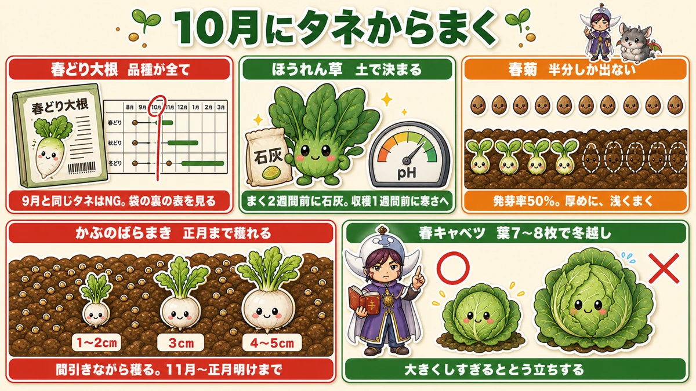
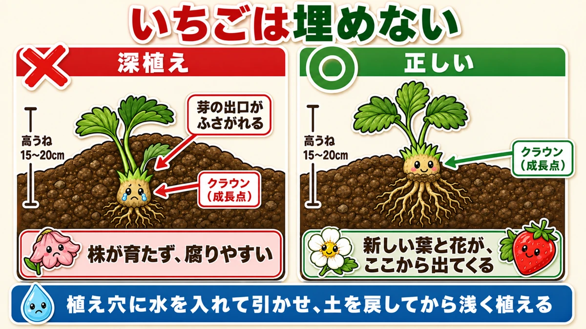
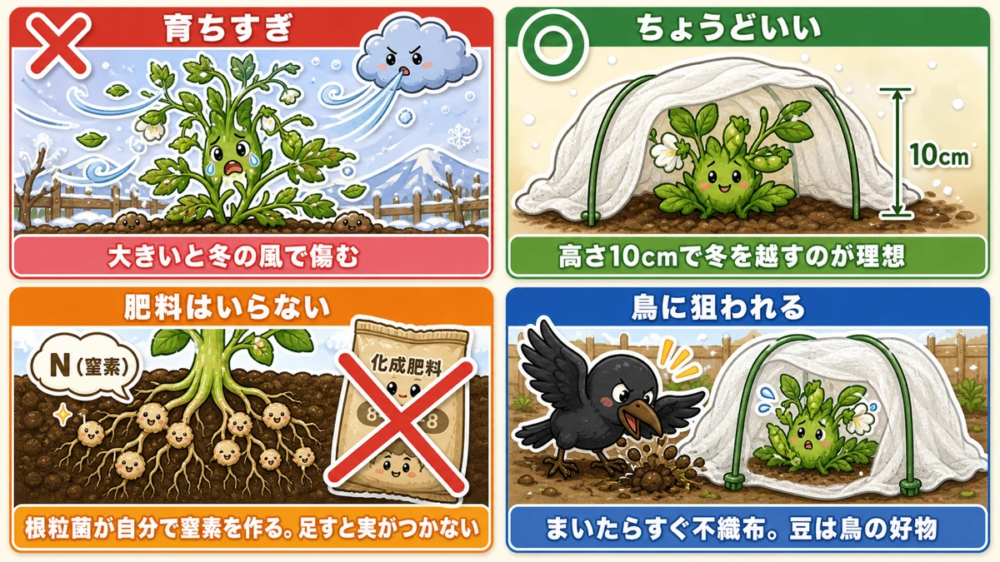
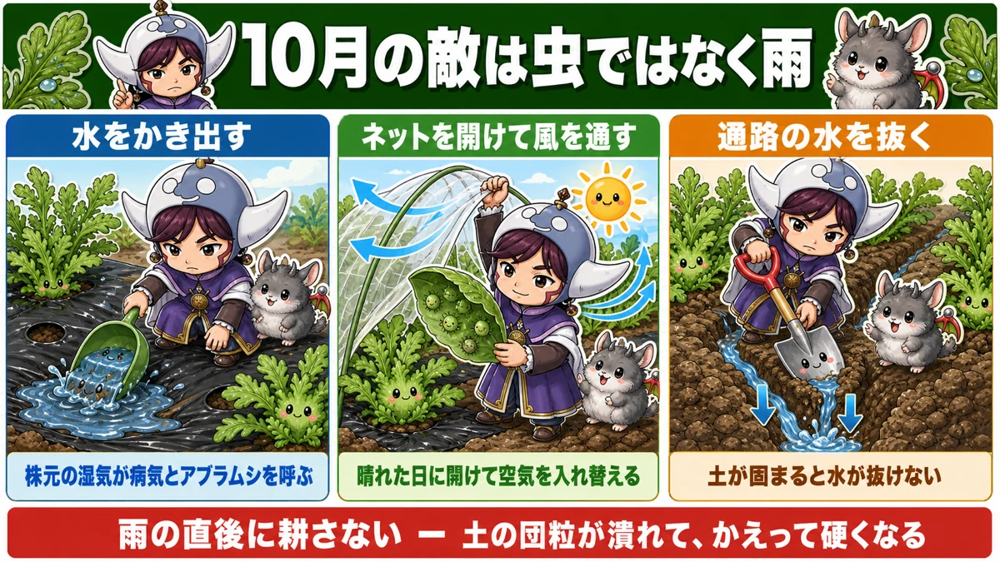
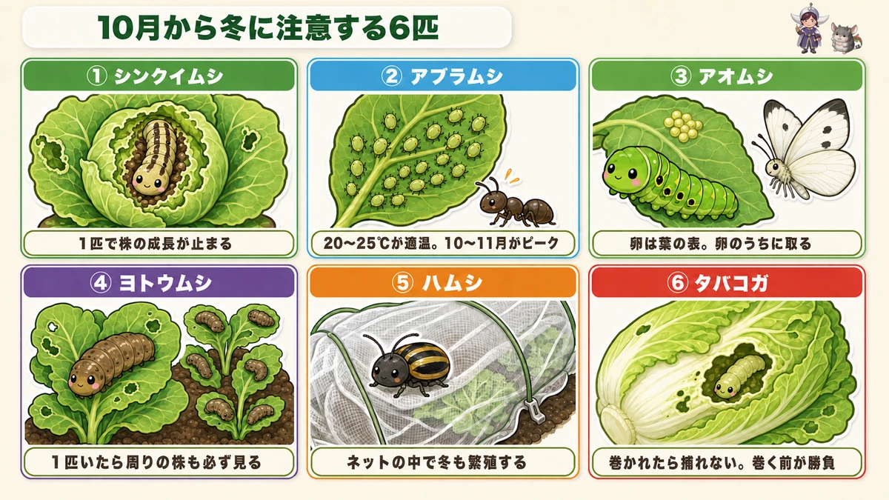

The 6–9 weeks before your first frost 🍓 With strawberries, depth is everything

🗨️ "I missed the late-summer sowing. Is that it for this year?"
🗨️ "When exactly am I supposed to plant strawberries?"
🗨️ "I planted them and they never flowered in spring."
Hello, I'm Eiko. Eight years of growing vegetables, organically and without pesticides, and a teaching licence in science — which is why these articles always end with the mechanism.
This is my monthly "what to sow and plant now" piece. In the Japanese edition it's called the October issue. That doesn't travel, so here I've rewritten every date as weeks before your first frost.
Let me give you the single most important line first.
The commonest failure in this window is planting strawberries too deep.
Bury the swollen part at the base of the plant and you close off the place new leaves and flowers come from. The plant stalls, and often rots from exactly that spot. Not pests. Not feeding. One finger's height on the day you planted decides the whole season.
And the good news: if you missed the late-summer window, this one is your second chance. There is genuinely plenty to sow — and with the heat gone, it's easier than the sowing before it ☺️
First, find your own date
How to use this article. I garden in central Japan, roughly USDA zone 8b–9a, where the first frost lands in late November. Everything below is written as "X weeks before your first frost", so look up your own average first frost date once and the whole calendar falls into place.
Most of this article is about overwintering — sowing now, going into winter small, harvesting in spring. That only works where the ground doesn't freeze solid.
| Your winter | How to read this article |
|---|---|
| Zone 8 and warmer (mild, ground rarely freezes) | Follow it as written. This is the climate I'm describing. |
| Zone 7 | Follow it as written, but plan on a low tunnel over the leafy crops from midwinter. |
| Zone 6 | Workable with a cold frame or a low tunnel from the start. Bring everything forward by about two weeks. |
| Zone 5 and colder | Most of these become spring sowings. What still works now: garlic, and spinach under cover. Plant strawberries in spring instead. |
What the garden is doing right now
Everything you plant in this window has one thing in common, and it's different from everything before it:
It overwinters, and you harvest it in spring.
Japanese gardeners used to call these "two-year vegetables" — sown in one year, harvested in the next. The word has gone out of use, but it describes the feeling exactly.
So the plan is not to grow these to size before winter. The plan is to go into winter small and let them run in spring. Miss that, and you'll look at a small plant in December, decide it needs feeding, and make things worse.
Two rules for everything you sow now
- These crops want around 60 °F (15 °C) to grow. From about 6 weeks before frost you'll start dropping below that.
- So sowing and covering are one job, not two. Lay garden fleece (floating row cover) straight onto the bed on the day you sow — not later, when you notice it's cold.
- When it turns properly cold, swap to a perforated plastic low tunnel.
Skip the fleece on a "it'll be fine" and germination straggles right into the cold. At this time of year the fleece is for warmth more than for pests.
Sowing from seed

What this diagram says （図解の文字）
- Spring daikon — the variety is everything. A sowing chart runs Aug → Mar across the top. "Don't reuse the same seed you sowed in late summer. Check the chart on the back of the packet."
- Spinach — decided by the soil. "Lime two weeks before sowing. Uncover one week before harvest to let the cold in."
- Shungiku (garland chrysanthemum) — only half come up. "50 % germination. Sow thickly, sow shallow."
- Turnips, broadcast — harvest right through to New Year. Sizes ½ in → 1¼ in → 2 in. "Thin as you harvest, from early winter to after New Year."
- Spring cabbage — overwinter at 7–8 leaves. "Grow it too big and it bolts."
Spring daikon — the variety is the whole game
A daikon sown now is a spring daikon. The commonest mistake is reaching for the same packet you used in late summer.
Summer-sown types bolt the moment spring warmth arrives — the flower stalk runs up and the root goes woody and hollow. For this window you need a variety bred to overwinter.
- Every packet has a sowing chart on the back. Check that this window is shaded in.
- Overwintering types are often smaller, or sharper in flavour, than the autumn ones.
- If you want a big mild root like the autumn crop, look specifically for winter-to-spring harvest varieties.
Growing is the same as autumn: no fertiliser, go easy on water. Tunnel it when it turns cold and you can be pulling roots from midwinter on.
One warning: spring daikon turns hot and woody fast if you leave it. Spring growth is quick — don't miss the window.
Spinach — the soil decides it
Spinach is the crop that either grows itself or refuses entirely, and the difference is soil pH. It hates acid soil and it hates poor soil.
- Lime two weeks before you sow. Where I garden, rain pushes soil acid over time — spinach is the one crop I never skip this for.
- If seedlings come up and then yellow and stall, acidity is the likely cause. Wood ash can pull it back.
And a trick worth doing: take the cover off a week before you harvest and let the cold hit it. Cold makes spinach store sugar in its leaves as antifreeze. The difference in sweetness is not subtle — if you're growing it in winter anyway, it's a waste not to.
Shungiku — assume half of it won't come up
Garland chrysanthemum has poor germination from the start. Where most vegetable seed runs 75–80 %, this is about 50 %. So sowing thickly is correct here, not wasteful.
Depth matters more than usual: it's a light-germinating seed. Bury it and no light reaches it, so it simply doesn't start.
- Shallow drill; the barest covering of soil
- Firm it down with your palm so seed and soil are in contact
- It won't germinate dry — sow just before or after rain
- Like spinach, it dislikes acid soil. Lime it.
Turnips — broadcast, and harvest for three months
Sown this late, turnips won't size up quickly. There's a way to turn that around.
No mulch. Scatter the seed thickly over the whole bed — not in rows, not in stations. Then harvest the biggest ones as your thinning, over and over.
- Start by eating them at ½–¾ in (1–2 cm), as thinnings
- As space opens up, the ones left behind size up
- By the end you're pulling them at 1½–2 in (4–5 cm)
That gives you three solid months of picking. The only work is the harvesting. Of everything in this window, it's the easiest and the longest-running.
Loose-leaf lettuce — you can move it mid-season
Loose-leaf types are cold-hardy and you can keep sowing them for weeks yet.
The useful thing about lettuce is that it transplants while it's growing. Once it has true leaves the roots are established enough that you can lift it and replant it elsewhere without losing it. Sow thickly, and when it crowds, move the surplus into the gaps. Very few vegetables let you do that.
Komatsuna — ready in time for the new year
Komatsuna is a mild Japanese leaf brassica, quick and cold-tolerant. Sown now, it's ready around New Year.
A small cultural aside, because I like it: the green that goes into ozoni, the New Year's soup, is different in every part of Japan — komatsuna in Tokyo, shōgatsuna around Nagoya, mizuna in Kyoto, hiroshimana in Hiroshima, katsuona in Kyushu. Growing your region's own green and counting down the days to New Year is a particular pleasure of this season ☺️ If you have a winter dish of your own, this is the slot for its green.
Spring cabbage — overwinter at 7–8 leaves
Spring cabbage is loose-headed and soft-leaved — a different vegetable from a winter cabbage. You'll cut it in mid to late spring.
There's a hard number here:
Too big before winter and it bolts.
So don't try to grow it on. 7–8 true leaves going into winter is ideal. This is the one time of year when feeding it up is the wrong instinct.
If it does overshoot past 10 leaves, you still have a move. The bolting switch is thought to need roughly 30 cumulative days below 50 °F (10 °C) — so put a tunnel on and cut the number of cold days it experiences.
That "30 days below 50 °F" is the same mechanism that makes onions bolt. Overwintered crops share their rules 😊
The main event: strawberries 🍓

What this diagram says （図解の文字）
- Title: "Don't bury strawberries."
- ✗ Planted deep — label on the crown: "the exit for new growth is blocked." Below: "the plant won't grow, and it rots easily."
- ○ Correct — "crown (growing point)" sitting proud of the soil. Below: "new leaves and flowers come from here."
- Both beds: raised 6–8 in (15–20 cm)
- Banner: "Fill the hole with water, let it drain, put soil back, then plant shallow."
Plant strawberries 5–7 weeks before frost.
Why that window: through winter a strawberry plant looks like it's doing nothing above ground, while underground the roots spread steadily. Plant late and it never gets that root-building time — and then there are no flowers in spring, and no fruit.
Never bury the crown — this one is absolute
Look at the base of the plant. Where the leaf stalks meet, there's a short knobbly stub of stem. That's the crown.
It is the growing point: every leaf and every flower the plant will ever make comes out of it.
Bury it and you have closed the exit. It's also now surrounded by wet soil, which is how the rot usually starts.
Aim for the bottom of the crown just barely covered.
Here's the method that makes it hard to get wrong:
- Fill the planting hole with water first and wait for it to drain
- Put a little soil back into the hole so the bottom is shallower than you think it should be
- Set the plant on that, and the crown naturally ends up above the soil
The surface of the plant's rootball should sit a touch higher than the bed. If it feels slightly too shallow, it's right.
Raise the bed, use mulch
Strawberry roots are fine and fibrous and spread sideways, and they're fussy: too wet damages them, too dry damages them.
- Raise the bed to 6–8 in (15–20 cm) — a normal bed here is about 4 in. The worse your drainage, the higher
- Mulch is worth it. Winter light is plenty, so covering the soil costs you nothing in growth
Without mulch you get sun damage on the plants and a cold bed that delays fruit in spring. This crop is in the ground for six months or more — tread the edges of the mulch down properly.
Feed and water: the answer is "don't"
- Too much fertiliser means fewer flowers. Best of all is a bed you haven't fed
- If you must feed, do it 3+ weeks before planting
- Top-dress once, 2–4 weeks after planting, a pinch per plant, 6–8 in (15–20 cm) away from the crown
And water: a good soak on planting day, and then essentially nothing. Watering daily rots the roots, and it also tells the plant it never needs to go looking — so it doesn't root deep or wide. Winter rain will do the job.
Choosing plants, and how many
- Pick plants with a thick, solid crown. A thin crown stays thin
- Check for dead leaves and for pests
- 12 in (30 cm) between plants
- 3–5 plants per person is the useful number. A family of four wants 12 or more
Strawberries multiply themselves, though, so starting with a few and increasing next year is a perfectly good plan. When you do propagate, use the second generation of runner plants onward — the first plantlet off the parent can carry the parent's disease; the ones after it are considered clean.
Runner direction, and skip the netting
You'll often see a cut stub on the plant where a runner used to attach. New flowers and runners tend to come out on the opposite side of that stub. So plant with the old stub facing away from the path, and the fruit presents itself on the near side where you can pick it. In a home garden it doesn't always oblige — if you can't find the stub, don't worry about it.
And this surprises people: strawberries don't want insect netting. You want full light on them, and netting makes checking for aphids an extra job.
For winter, if you haven't mulched, cover the crowns with straw or dried weeds from around 2–4 weeks after frost. No plastic tunnel. These plants need the cold — I'll explain why at the end ☺️
Beans and peas, right at the edge

What this diagram says （図解の文字）
- Title: "Beans go into winter small."
- ✗ Too big — "big plants get damaged by winter wind."
- ○ Just right — 4 in (10 cm) — "4 in going into winter is ideal."
- No fertiliser — a bag of 8-8-8 with the N crossed out: "the root nodule bacteria make their own nitrogen. Add more and you get no pods."
- Birds — "fleece on the day you sow. Birds love beans."
Broad beans and snap peas — smaller is better
Sow these 3–5 weeks before frost. There is one rule and it governs everything:
Go into winter small.
A plant that's grown large before midwinter gets torn about by cold wind. It will run away in spring regardless, so there is nothing to gain from size now.
- Snap peas want to be about 4 in (10 cm) when winter arrives. Past 8 in (20 cm) and overwintering gets difficult
- Winters have been milder in recent years, so sowing 2–3 weeks later than the old advice is often about right
- Sow a few in pots at the same time as insurance — if the row fails you have replacements
Never feed legumes
This is where it gets interesting, and it's the science of the whole family.
Legume roots host nitrogen-fixing bacteria in nodules. Those bacteria pull nitrogen out of the air and hand it to the plant. The bean is, in effect, running its own fertiliser factory underground.
So when you add fertiliser, the total is too much — and you get leaf and vine and no pods.
- Whatever the previous crop left behind is enough
- Avoid beds that were heavily fed for sweetcorn or aubergines
Three things to get right when sowing
- 4 seeds per station, and level the soil in the hole — a dip collects water and rots the seed
- Cover, then firm it down. If the soil isn't dry, don't water
- 12–16 in (30–40 cm) between stations; 18 in (45 cm) for tall varieties
And the one that undoes all of it if you skip it:
Lay fleece over them immediately.
Birds love beans. Sown today, dug up and cleared by crows tomorrow — it is one of the most common ways this sowing fails. Keep them covered until the true leaves open. It doubles as drought protection.
At 2–3 true leaves, thin to the strongest two per station.
Broad beans next to onions — both do better
Of all the companion pairings, this is the one I'm most convinced by.
- Same planting time and same harvest time, so the bed plan is easy
- Both root at depth, so the soil around the crowns stays covered and less cold-damaged
- In spring the bean's nodule bacteria leave nitrogen behind, and the onions take it up and bulb bigger
- Aphids gather on the bean tips in spring, which brings in ladybirds and hoverflies — and those predators work the onions too
For strawberries, garlic or spring onions are the usual partners; aphids and spider mites dislike the allium smell. Plant them about 12 in (30 cm) away from the crowns.
That said, companion planting is contested and none of it is guaranteed. Treat it as a bonus if it works 😊
The real hazard of this season is rain, not insects

What this diagram says （図解の文字）
- Title: "This season's enemy isn't insects, it's rain."
- Bail out standing water — "damp around the crown invites disease and aphids."
- Open the netting and let air through — "open it on a clear day and change the air."
- Drain the paths — "compacted soil won't let water away."
- Don't dig straight after rain — "you crush the soil crumb and end up with harder soil."
Nobody talks about this one. In my climate this is a wet season — a bad year gives a full week of rain. It's also the season with the most things going in the ground: strawberries, garlic, onions, beans. So it's the season most exposed to it.
A long wet spell does three things:
- Disease. Soil that stays wet grows fungal populations, and heading crops start to rot
- Aphids. Damp and still air is paradise for them
- Rotted seed and roots. Seed sitting in water rots; even month-old transplants get root rot
Three things to do afterwards
Bail the water off the mulch. Any dip in the bed collects a puddle, and that raises humidity right at the crown — which is where disease and aphids start. Where it pools repeatedly, punch a small hole so it drains to the path. Water going down the planting holes is fine.
Open the netting on the first clear day. Air movement under a cover after rain is about as bad as it gets. Open it up, change the air — and while you're in there, check leaf undersides and growing points. One aphid becomes a colony in days. Knocking the water droplets off the netting and the leaves helps too.
Get the paths draining. Compacted soil holds water. Digging the path down a little, or just pushing a spade in and rocking it, changes things.
But don't dig right after rain
This is the tempting mistake. The soil is a mess, so you go out and fork through the paths the moment it stops.
Soil holds its structure as crumbs — small clumps of particles stuck together — and the gaps between those crumbs are the passages for water and air. Work it while it's saturated and you crush that structure flat. You end up with harder soil than you started with.
Wait until it has dried out somewhat.
Six pests to watch from now into winter

What this diagram says （図解の文字）
- ① Cabbage webworm — "one is enough to stop a plant growing." It bores into the growing point
- ② Aphids — "68–77 °F (20–25 °C) suits them; this is their peak season."
- ③ Cabbage white caterpillars — "eggs are on the upper leaf surface. Take them while they're eggs."
- ④ Armyworms / cutworms — "find one and check every plant around it."
- ⑤ Flea and leaf beetles — "they carry on breeding under the netting all winter."
- ⑥ Budworms — "once the head closes you can't catch them. It's decided before it closes."
A few notes on the ones that catch people out.
Aphids peak now, not in summer — this temperature band is their optimum. If you see ants running up a plant, there are aphids on it; the ants are farming them.
Beetles under netting are the frustrating ones. They move between the soil and the leaves and keep breeding inside the cover all winter. Squashing every one you find visibly reduces next year's numbers. They're small and fast — a paintbrush with something sticky on it works.
Budworms bore into the centre. In anything that forms a head — lettuce, cabbage, Chinese cabbage — once they're inside the head, that's the end of it; they eat it out from the middle. So the whole battle is before the head closes. Take the eggs and the small caterpillars off the leaves while you still can.
🔬 The science: strawberries prepare in autumn and sleep through winter
Science time. Let's follow a strawberry from now to its spring flowers.
Plant one now and it won't flower. It flowers after winter. But the flowers themselves are already being made, now.
As summer heat fades and the days shorten, that combination is the signal: inside the crown, tiny flower buds start forming. This is flower bud initiation.
If those buds simply opened, winter would kill them. So the plant sleeps instead — dormancy.
And what wakes it up is a memory of cold.
The plant has to experience a stretch of temperatures below about 41 °F (5 °C). Only after that does warmth mean "winter is over". Autumn 68 °F and spring 68 °F are identical as numbers — the plant can't tell them apart on temperature alone. So it only accepts warmth that arrives after the cold as real spring.
Buds made in autumn, woken by winter cold, opened by spring warmth. That's the order the year runs in.
Which is exactly why you don't bury the crown: it is both the place those buds are made and the door new leaves come out of. Block the door with soil and the plant can wake up perfectly well and still get nowhere.
It's also why there's no plastic tunnel. Warm it early and it goes into spring without having slept properly — and grows worse for it.
That "30 cumulative days below 50 °F" for onions and spring cabbage is the same idea: a plant counting cold. Plants carry both a thermometer and a calendar. Winter gets more interesting once you see that 😊
If you garden with children, look into a strawberry crown once a month. All winter it looks stopped — and then, as spring approaches, new leaves stand up out of the centre. You can watch the moment a sleeping plant wakes 🍓
To sum up
- ✅ Don't bury the strawberry crown. Water the hole, put soil back, plant shallow. Bed raised 6–8 in. No feed, no watering
- ✅ Everything sown now overwinters. Small going into winter is correct — spring cabbage at 7–8 leaves, snap peas at 4 in
- ✅ Spring daikon is all about the variety. Read the sowing chart on the back of the packet
- ✅ Never feed legumes. The nodule bacteria make their own nitrogen
- ✅ Rain is the hazard, not insects. Bail the puddles, open the covers on clear days, and don't dig wet soil
- ✅ Aphids peak now. Ants on a plant mean aphids on that plant
You don't have to do all of it. Plant three strawberries with their crowns showing. That one thing changes next spring completely 🌱
Thank you for reading!